65. Camshaft Timing Chain and Sprocket Cleaning and Inspection
Camshaft Timing Drive Components Cleaning and Inspection
Cleaning Procedure
1. Clean all the following components with solvent:
* Camshaft position actuator - exterior only
* Camshaft position actuator oil control valve
* Intermediate sprocket
* Crankshaft sprocket
* Primary timing chain
* Secondary timing chains
* Primary timing chain guide
* Secondary timing chain guides
* Primary timing chain shoe
* Secondary timing chain shoes
* Primary timing chain tensioner
* Secondary timing chain tensioners
* Timing component fastening bolts
Caution: Refer to Safety Glasses Caution (Safety Glasses Warning) .
2. Dry the timing components with compressed air.
Visual Inspection
Camshaft Position Actuators
Camshaft Position Actuators:
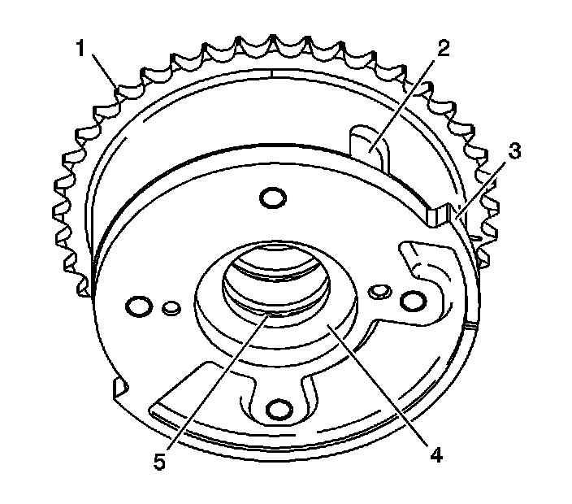
1. Inspect the front of the exhaust camshaft position actuators for the following:
* Sprocket damage (1)
* Loose or missing lock pin cover (2)
* Reluctor/sensor wheel damage (3)
* Camshaft position actuator oil control valve seating/sealing inner hub flange damage (4)
* Blockage to the oil passages (5)

2. Inspect the back of the exhaust camshaft position actuators for the following:
* Sprocket damage (1)
* Camshaft locating pin hole (2)
* Camshaft seating/sealing inner hub flange damage (3)
* Blockage to the oil passages (4)
* Loose or missing housing bolts (5)
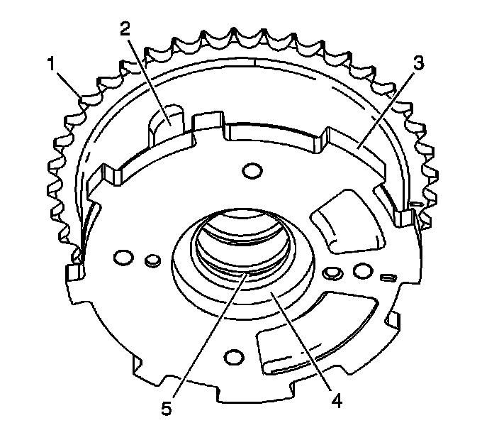
3. Inspect the front of the intake camshaft position actuators for the following:
* Sprocket damage (1)
* Loose or missing lock pin cover (2)
* Reluctor/sensor wheel damage (3)
* Camshaft position actuator oil control valve seating/sealing inner hub flange damage (4)
* Blockage to the oil passages (5)

4. Inspect the back of the intake camshaft position actuators for the following:
* Sprocket damage (1)
* Camshaft locating pin hole (2)
* Camshaft seating/sealing inner hub flange damage (3)
* Blockage to the oil passages (4)
* Loose or missing housing bolts (5)
5. Replace a damaged camshaft position actuator.
Camshaft Position Actuator Oil Control Valve
Camshaft Position Actuator Oil Control Valve:
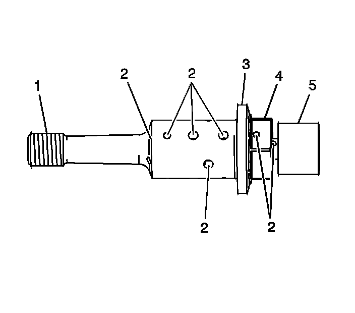
1. Inspect the camshaft position actuator oil control valves for the following:
* Thread damage (1)
* Blockage to the oil passages (2)
* Camshaft position actuator oil control valve seating/sealing flange damage (3)
* Hex damage (4)
* Spool valve head damage (5)
2. Replace a damaged camshaft position actuator oil control valve.
Intermediate Sprocket
Intermediate Sprocket:
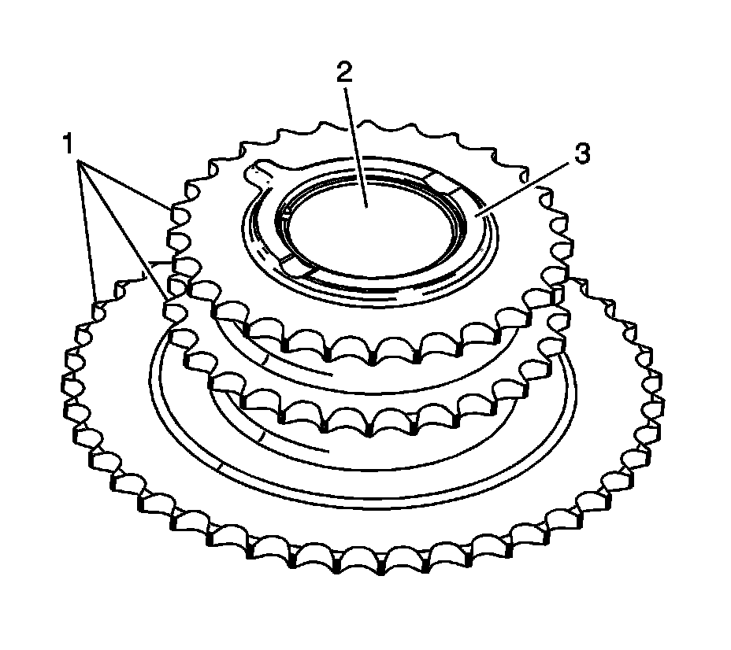
1. Inspect the front of the intermediate sprocket for the following:
* Sprocket damage (1)
* Bearing bore damage (2)
* Thrust surface damage (3)
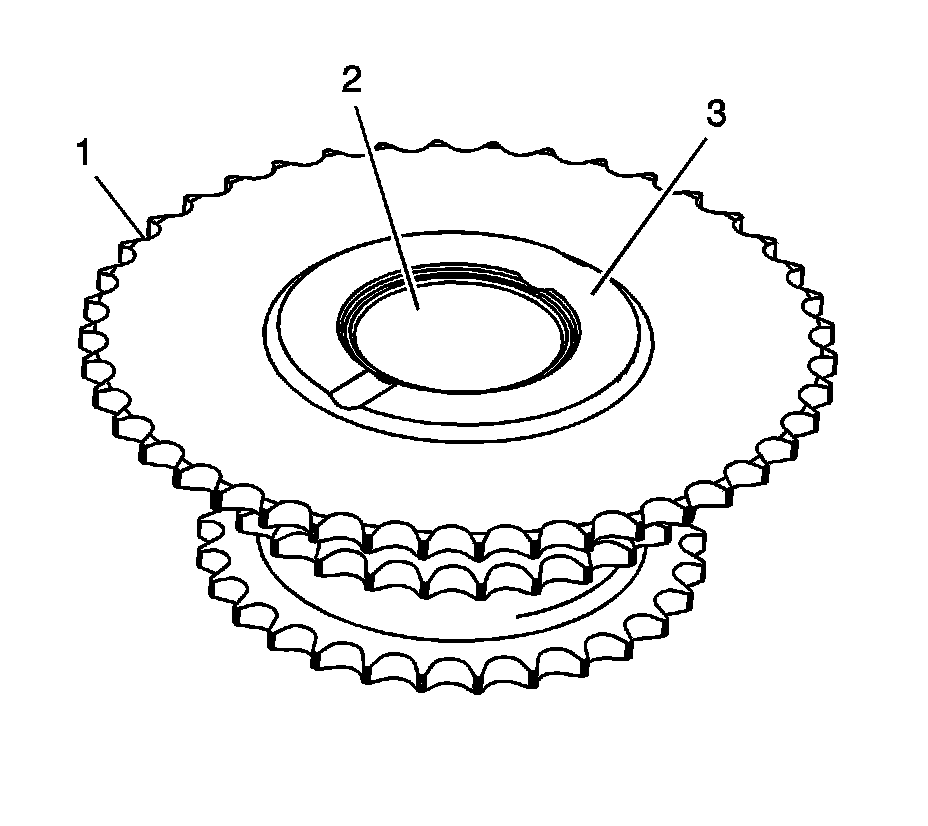
2. Inspect the back of the intermediate sprocket for the following:
* Sprocket damage (1)
* Bearing bore damage (2)
* Thrust surface damage (3)
3. Replace a damaged intermediate sprocket.
Crankshaft Sprocket
Crankshaft Sprocket:
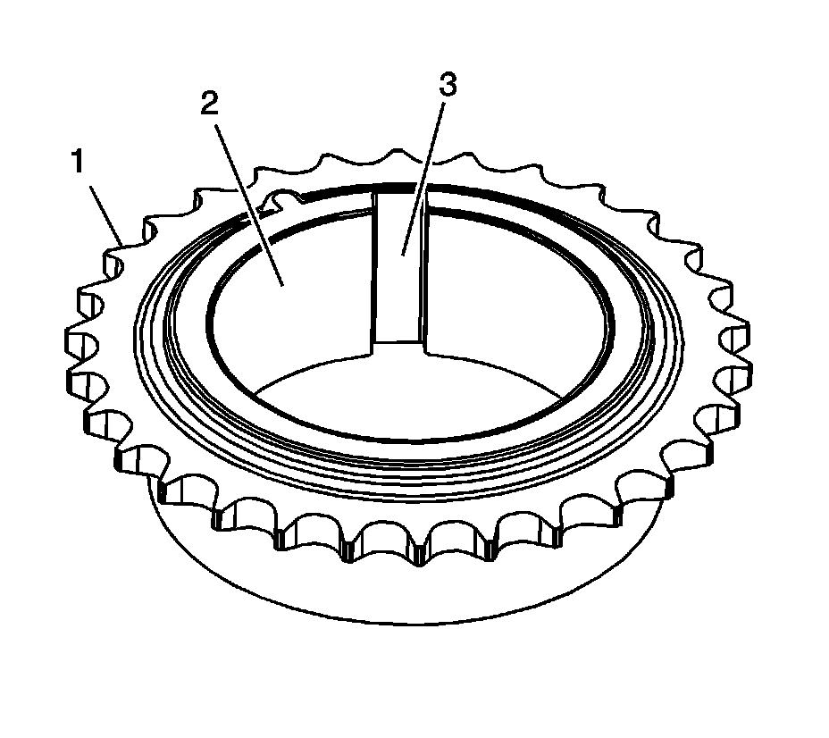
1. Inspect the intermediate sprocket for the following:
* Sprocket damage (1)
* Bore damage (2)
* Keyway damage (3)
2. Replace a damaged crankshaft sprocket.
Primary and Secondary Timing Chains
Primary And Secondary Timing Chains:
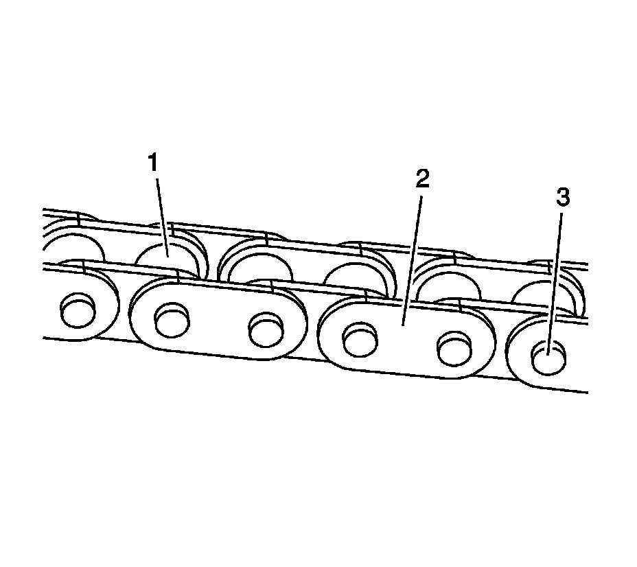
1. Inspect the primary and/or secondary timing chain for the following:
* Binding or worn rollers (1)
* Loose links (2)
* Loose pins (3)
2. Replace a damaged primary and/or secondary timing chains.
Primary Timing Chain Guide
Primary Timing Chain Guide:
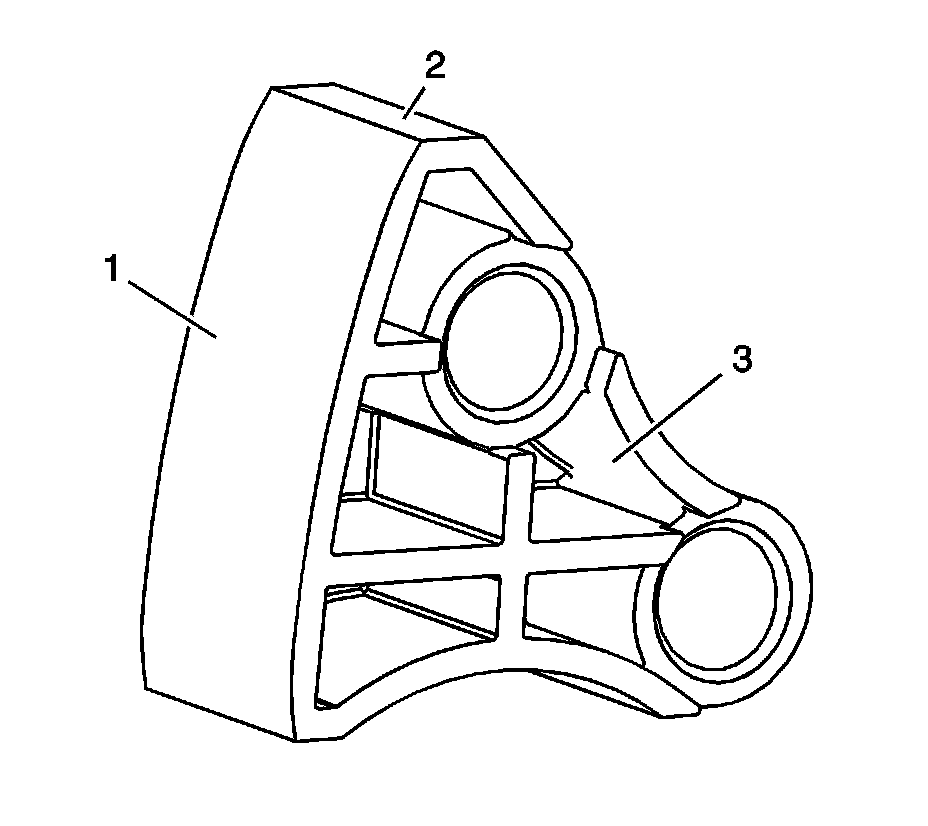
1. Inspect the primary timing chain guide for the following:
* Worn guide surface (1)
* Cracked or broken guide surface (2)
* Cracked or damaged guide base (3)
2. Replace a damaged primary timing chain guide.
Secondary Timing Chain Guides
Secondary Timing Chain Guides:
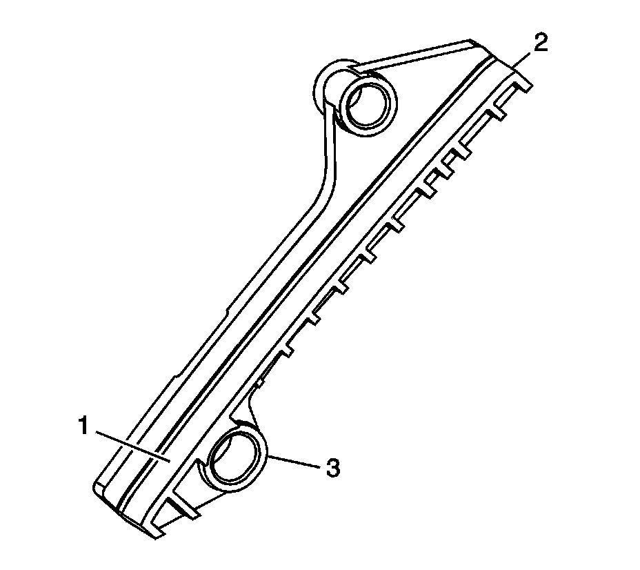
1. Inspect the secondary timing chain guides for the following:
* Worn guide surface (1)
* Cracked or broken guide surface (2)
* Cracked or damaged guide base (3)
2. Replace a damaged secondary timing chain guide.
Secondary Timing Chain Shoes
Secondary Timing Chain Shoes:
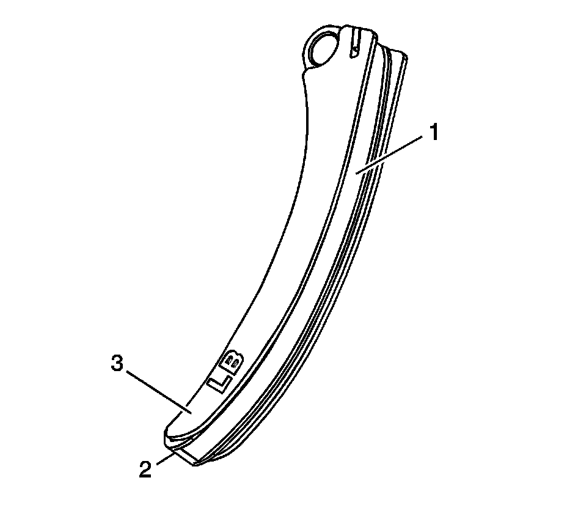
1. Inspect the secondary timing chain shoes for the following:
* Worn shoe surface (1)
* Cracked or broken shoe surface (2)
* Cracked or damaged shoe (3)
2. Replace a damaged secondary timing chain shoe.
Primary Timing Chain Tensioner
Primary Timing Chain Tensioner:
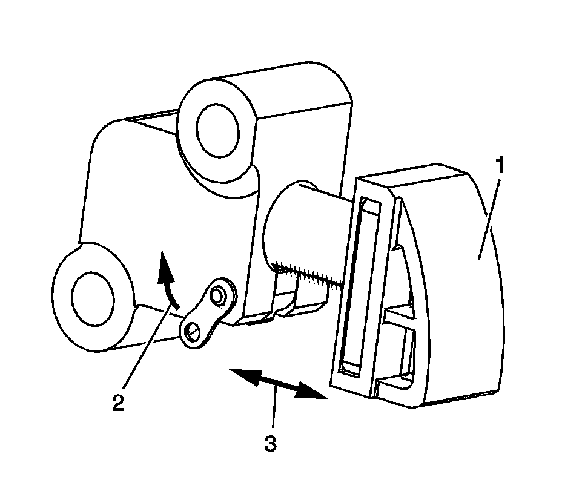
1. Inspect the primary timing chain tensioner for worn primary timing chain tensioner shoe surface (1).
2. Inspect the primary timing chain tensioner for locked or binding timing chain tensioner. Release the locking lever (2) and ensure the plunger moves freely (3) in and out of the body of the tensioner.
3. Replace a damaged primary timing chain tensioner.
Secondary Timing Chain Tensioners
Secondary Timing Chain Tensioners:
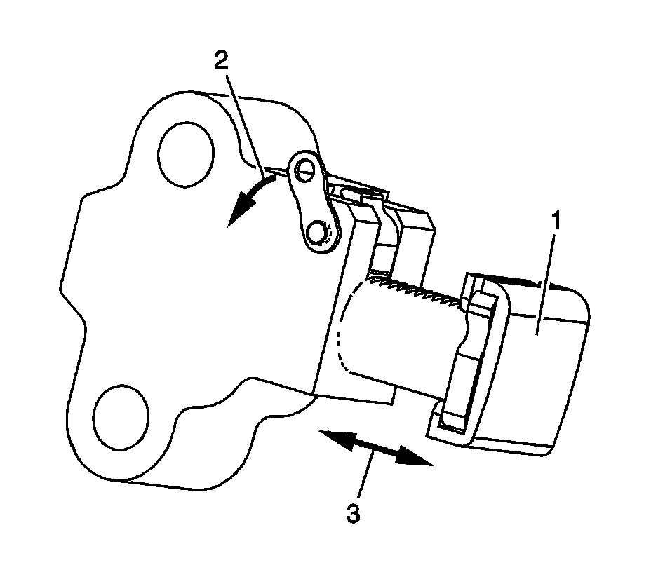
1. Inspect the secondary timing chain tensioner for damaged plunger-to-shoe contact surface (1).
2. Inspect the secondary timing chain tensioner for locked or binding timing chain tensioner. Release the locking lever (2) and ensure the plunger moves freely (3) in and out of the body of the tensioner.
3. Replace a damaged primary and/or secondary timing chain tensioner.
Timing Component Fasteners
1. Inspect the timing component fasteners.
2. Replace any damaged timing component fasteners, do not repair.
Mechanical Inspection
Camshaft Position Actuators
Timing Component Fasteners:
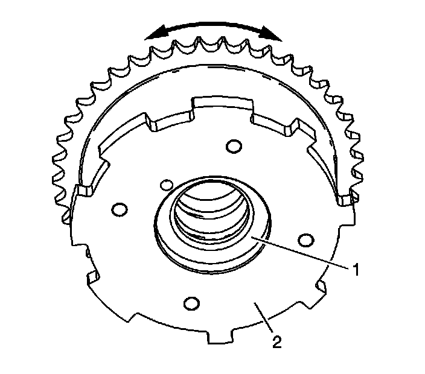
Caution: When removing, handling or installing this component wear protective gloves. The sharp edges on the component may be very sharp and may cause injury.
Notice: DO NOT clamp the component in any clamping device such as a vise or gripping tool. Clamping the component can cause external and internal damage that can affect engine and/or component performance.
1. Inspect the intake camshaft position actuator to ensure the internal lock pin is engaged and the camshaft position actuator is parked in the home position. Attempt to rotate the inner rotor hub (1) within the outer housing (2).
If the intake camshaft position actuator can be turned in either direction the camshaft position actuator must be replaced.
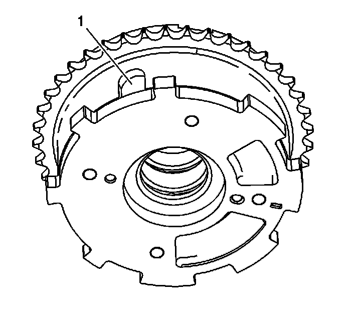
2. Locate the internal hub oil passage for the locking pin by observing the external housing locking pin cover (1). The oil passage in the hub for the locking pin is inline with the location of the locking pin cover.
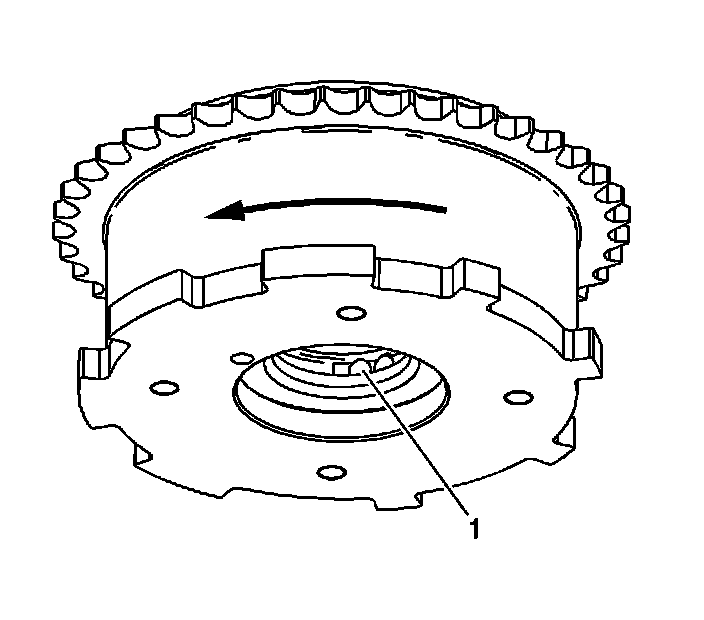
3. Inspect the intake camshaft position actuator for smooth and even movement. Using a pre-bent hex key, smaller than the oil passage, depress the internal lock pin through the oil passage (1) located within the hub of the camshaft position actuator. While viewing the intake camshaft position actuator from the front and with the lock pin depressed, the outer housing should be manually moved in the clockwise direction from the inner rotor hub.
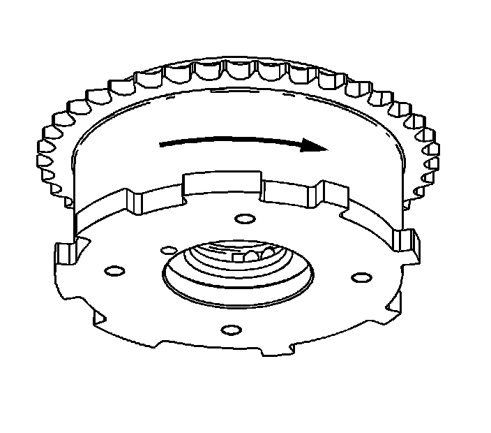
4. Remove the hex key from the oil passage and manually return the outer housing clockwise back to the home position. Ensure the lock pin engages when the outer housing returns to the home position.
5. If the intake camshaft position actuator does not move, the movement is not smooth and even, or the lock pin does not engage in the home position replace the intake camshaft position actuator.
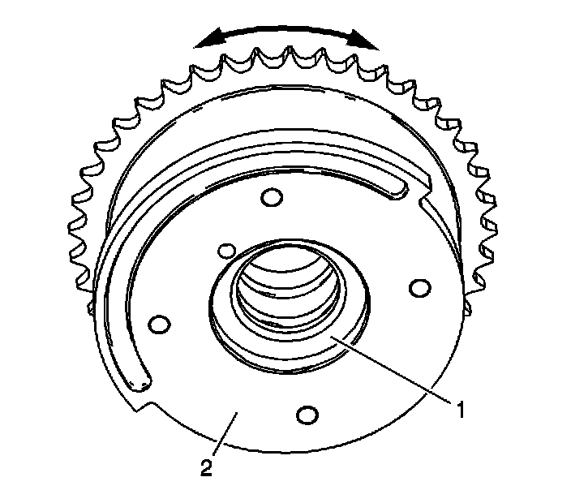
6. Inspect the exhaust camshaft position actuator to ensure the internal lock pin is engaged and the camshaft position actuator is parked in the home position. Attempt to rotate the inner rotor hub (1) within the outer housing (2).
If the exhaust camshaft position actuator can be turned in either direction the camshaft position actuator must be replaced.
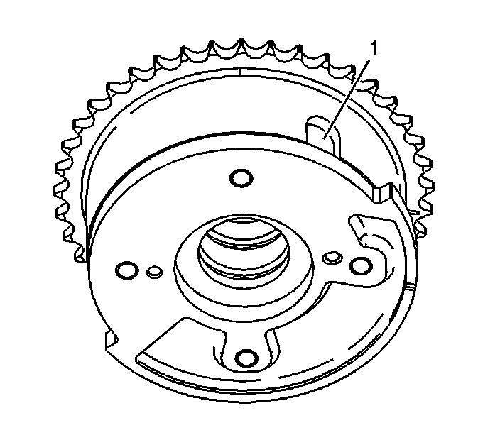
7. Locate the internal hub oil passage for the locking pin by observing the external housing locking pin cover (1). The oil passage in the hub for the locking pin is inline with the location of the locking pin cover.
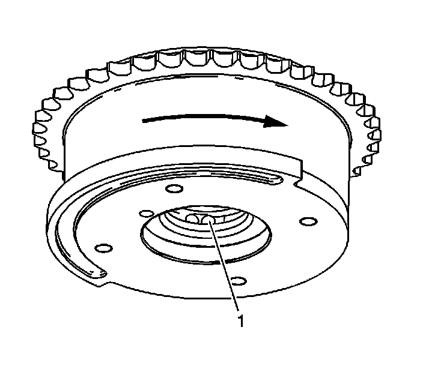
8. Inspect the exhaust camshaft position actuators for smooth and even movement. The exhaust camshaft position actuator has return springs and the inspection will require additional assistance to perform. Using a pre-bent hex key, smaller than the oil passage, depress the internal lock pin through the oil passage (1) located within the hub of the camshaft position actuator. While viewing the exhaust camshaft position actuator from the front and with the lock pin depressed, the outer housing should be manually moved in the clockwise direction from the inner rotor hub.
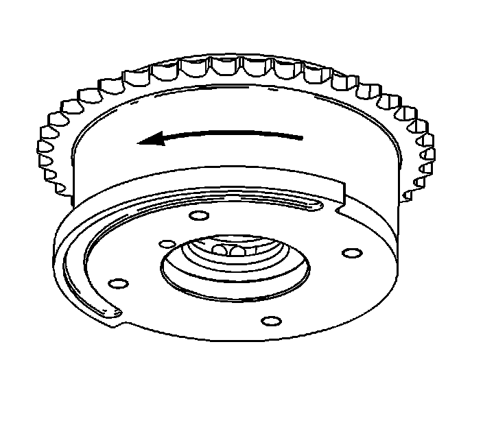
9. Remove the hex key from the oil passage and allow the outer housing to move counter clockwise back to the home position. Ensure the return springs bring the outer housing back to the home position and the lock pin engages.
10. If the exhaust camshaft position actuator does not move, the movement is not smooth and even, the return springs do not return the outer housing to the home position, or the lock pin does not engage in the home position replace the exhaust camshaft position actuator.
Camshaft Position Actuator Oil Control Valve

Notice: DO NOT clamp the component in any clamping device such as a vise or gripping tool. Clamping the component can cause external and internal damage that can affect engine and/or component performance.
1. Inspect the camshaft position actuator oil control valves for smooth and even movement of the spool valve within the camshaft position actuator oil control valve body.
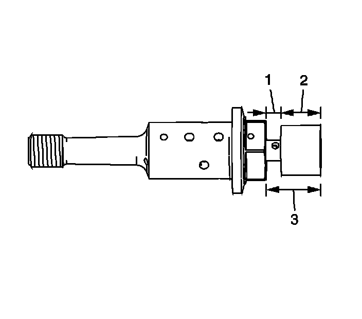
2. Inspect the camshaft position actuator oil control valves for proper movement of the spool valve. The valve should move a distance (2) of 4.35 mm (0.1713 in). Measure from the underside of the spool valve head. The home position is 2.25 mm (0.0886 in) above (1) the hex and the fully extended position measures 6.60 mm (0.2598 in) above (3) the hex.
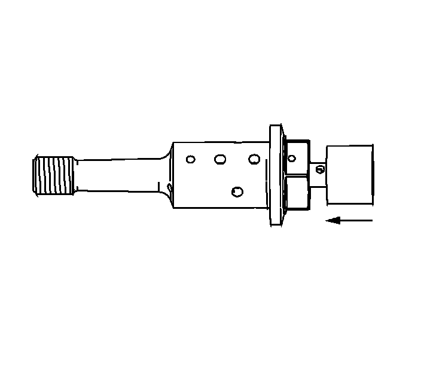
3. Inspect the camshaft position actuator oil control valves for proper return of the spool valve to the home position by the internal spring.